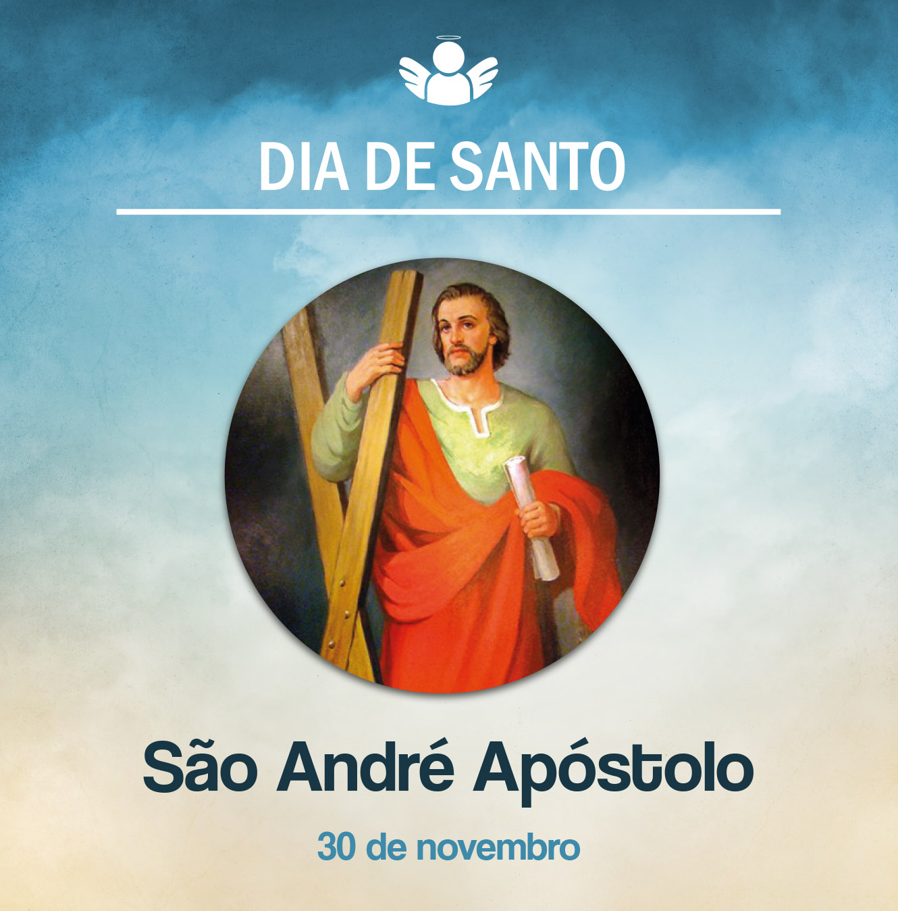

Santo André, Apóstolo
30 de Novembro de 2020
Hoje celebramos a festa de Santo André. Ele fez parte do grupo dos doze apóstolos de Jesus. Para bem celebrar este dia, vamos relembrar sua história. André era pescador e vivia na cidade de Cafarnaum, localizada às margens do lago de Genesaré. Era irmão de Simão Pedro e, juntos, migraram de Betsaida, na Galileia, para Cafarnaum. Acredita-se que foi discípulo de João Batista.
Segundo o que nos narram os evangelistas Marcos e Mateus, André e seu irmão estavam pescando quando foram abordados por Jesus, que os chamou a segui-lo. “Segui-me, e eu vos farei pescadores de homens”. Então eles o seguiram. O evangelista João, em seu relato, disse que André seguiu Jesus após João Batista apresentar Cristo, dizendo “Eis o Cordeiro de Deus”. Então André foi dizer a seu irmão Simão que havia encontrado o Messias e o conduziu até Jesus.
André é mencionado por outras três vezes nos evangelhos. Na multiplicação dos pães, quando apresenta a Jesus o menino que está com alguns pães de cevada e peixes; é intermediário do desejo dos forasteiros vindos a Jerusalém para serem apresentados a Cristo; e quando provoca que Jesus fale da destruição de Jerusalém. Aliás, Santo André é colocado como um dos primeiros no elenco do grupo dos apóstolos.
Depois de Pentecostes, teria seguido o grande mandado de Jesus: “Ide e anunciai a Boa-Nova a todos os povos”. Alguns historiadores, como Eusébio de Cesareia, relatam que André evangelizou na Cítia, na Rússia meridional. A respeito do seu martírio, não há informações certas, entretanto escritos apócrifos enfeitaram com fábulas a vida desse grande apóstolo. A data da festa (30 de novembro) é muito antiga, inclusive São Gregório Nazianzeno já lembra essa festividade.
Que o testemunho de Santo André nos inspire a viver nossa fé cristã no seguimento de Jesus e na coragem de nos lançarmos à missão, anunciando a Boa-Nova do Reino. Que ele interceda a Deus por todos nós!